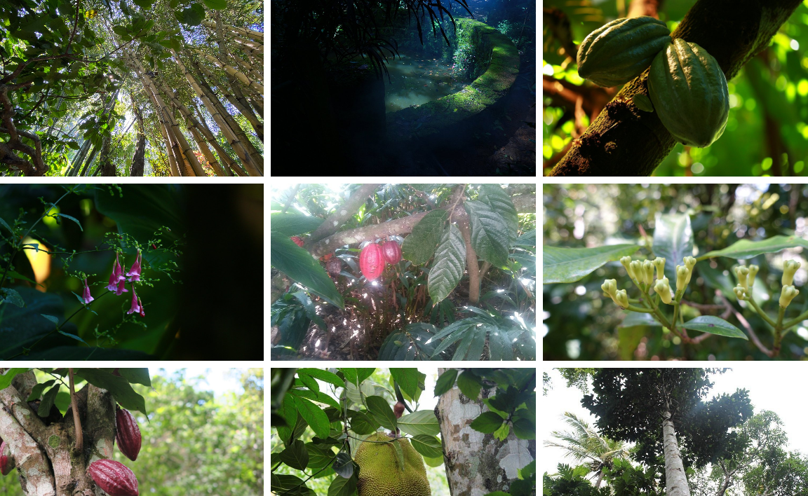
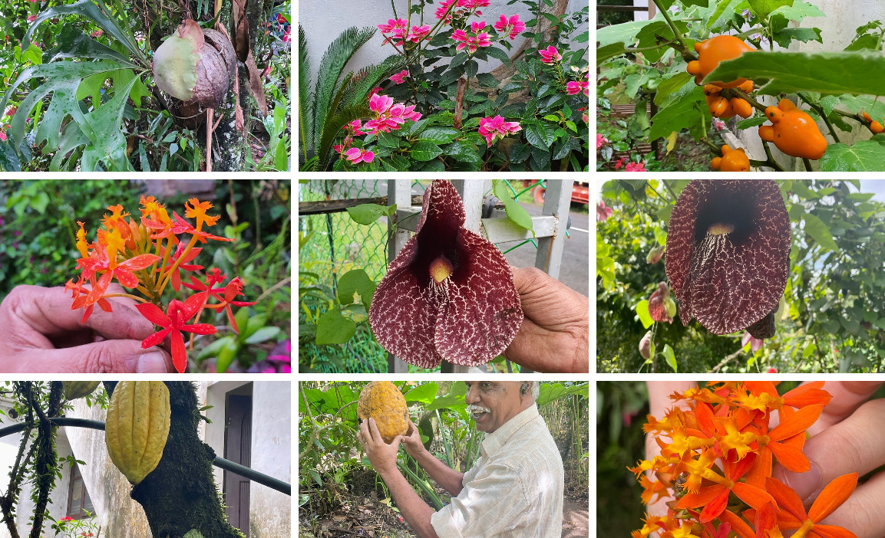
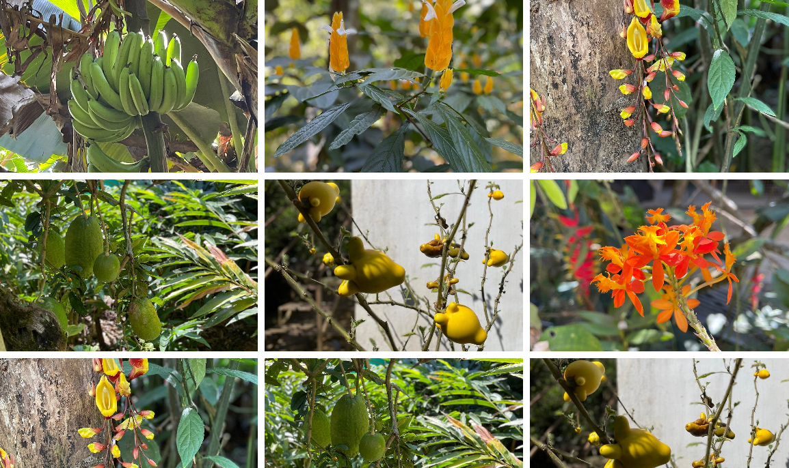

Abraham's Spice Garden is a popular tourist attraction in Thekkady, Idukki, where visitors can learn about Kerala's famous spices and medicinal plants. The garden is home to a wide variety of spices such as cardamom, pepper, cinnamon, cloves, nutmeg, vanilla, and coffee. Guided tours help visitors understand how these spices are grown, harvested, and used in cooking and traditional medicine.
The garden offers a peaceful natural environment with beautiful greenery and fresh air. Visitors can also purchase fresh spices, herbal products, and natural oils from the garden shop. Abraham's Spice Garden is an excellent place for nature lovers, students, and tourists who wish to experience Kerala's rich spice heritage and agricultural traditions.



Abraham's Spice Garden is one of the oldest and most popular spice gardens in Thekkady, Idukki District, Kerala. Established in 1952, it is a family-owned organic spice plantation where visitors can learn about the cultivation of spices, medicinal plants and Ayurvedic herbs. It is well known for its guided tours and farm-fresh spices.
The garden was established in 1952 by the Abraham family. For generations, the family has cultivated spices using traditional farming methods. Today, it is one of the oldest spice gardens in Thekkady and welcomes visitors from around the world.
The garden contains many medicinal plants used in Ayurveda. Visitors can learn about their health benefits, traditional uses and methods of cultivation from experienced guides.
The garden is home to a wide variety of spice plants, fruit trees, flowering plants, medicinal herbs and tropical vegetation. The lush greenery makes it an ideal place for nature lovers.
Today, Abraham's Spice Garden is one of the most visited spice plantations in Thekkady. It is known for organic farming, educational tours, Ayurvedic plants and high-quality spices. The garden attracts thousands of tourists every year.